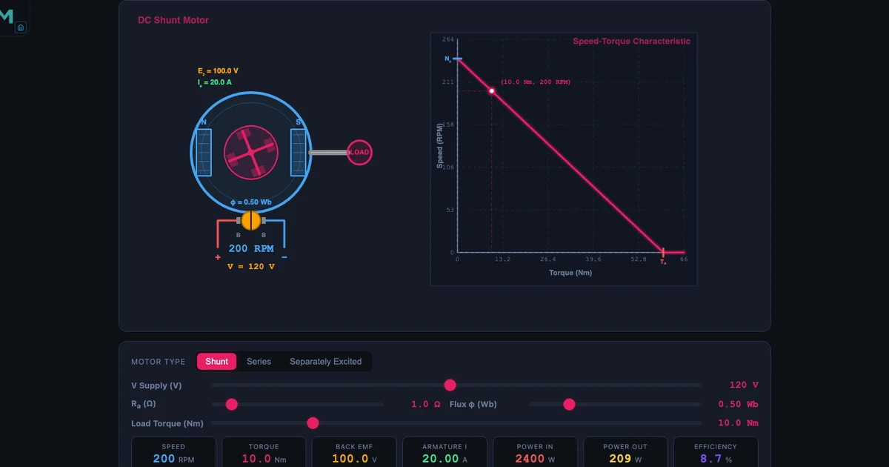
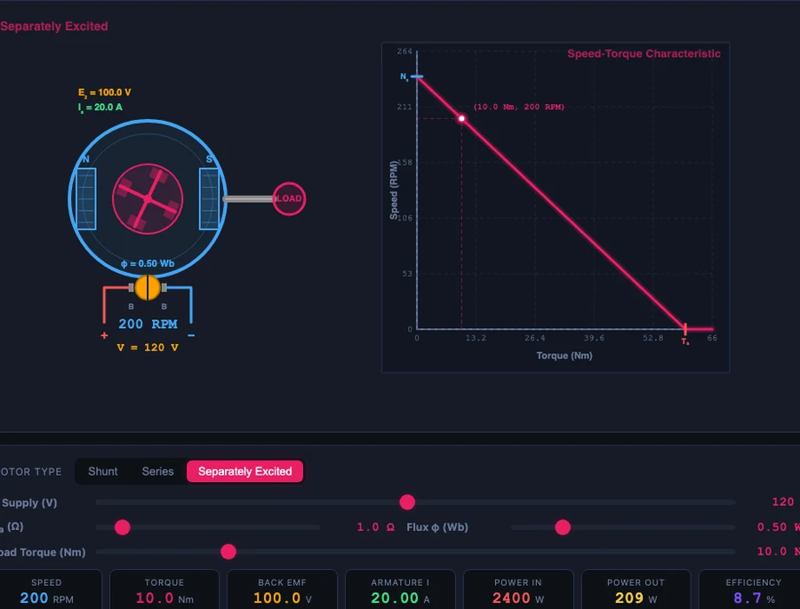

DC Motor Simulator: Speed, Torque and Back EMF Explained

- Back EMF is the voltage a spinning armature generates against the supply, given by Eb = V − IaRa; it self-regulates the motor by raising armature current and torque whenever speed drops under load.
- Motor speed follows N = Eb / (Kφ) and torque follows T = KφIa, so a shunt motor (constant flux) gives a nearly flat speed–torque curve while a series motor (T ∝ Ia²) gives very high starting torque but a steep, hyperbolic curve.
- DC motor speed is controlled two ways: armature-voltage control below base speed (N ∝ Va, constant-torque region) and field weakening above base speed (N ∝ 1/φ, constant-power region).
Every electrical engineering student writes Eb = V − IaRa at some point. Far fewer can tell you what happens to that back EMF when you suddenly drop a heavy load onto a running motor, or why a series motor's speed curve is hyperbolic while a shunt motor's is nearly flat. Those distinctions only become clear when you can change one variable, watch all the others respond, and see the speed–torque curve reshape in real time.
The DC Motor simulator on NHIT VisualLab puts all three motor types — shunt, series, and separately excited — on the same canvas with eight industrial presets ranging from a 12 V hobby motor to a 600 V electric vehicle traction drive. Four modes (Simulate, Explore, Practice, Quiz) take students from first principles through examined calculations.
Why DC Motor Theory Is Harder Than It Looks
The equations are not the problem. Most students can memorise Eb = V − IaRa, N = Eb / (Kφ), and T = KφIa. The problem is that three of these four quantities — Eb, N, and Ia — are mutually dependent. Change the load torque, and Ia changes. Ia changes, so Eb changes. Eb changes, so N changes. Students who have only substituted numbers into formulas struggle to predict the direction of these changes under realistic conditions.
Static textbook diagrams can show a speed–torque curve as a line on a graph. They cannot show that line responding to a slider you just moved. They cannot show the operating point — the intersection of the motor's characteristic with the load line — shift when you increase the supply voltage. A simulator can, and that dynamic response is exactly where understanding lives.
Three Motor Types, One Canvas
The three motor type pills — Shunt, Series, and Separately Excited — each produce a characteristically different speed–torque curve on the canvas.
Shunt motor — the field winding sits in parallel with the armature, so the field voltage is always equal to the supply voltage. Flux is nearly constant regardless of load. The result is a nearly horizontal speed–torque line: speed drops only slightly from no-load to full-load, which is why shunt motors are specified for lathes, conveyors, and blowers wherever constant-speed operation matters.
Series motor — the field winding is in series with the armature, so field current equals armature current. Below magnetic saturation, φ ∝ Ia, which makes T ∝ Ia². This gives enormous starting torque — the reason series motors drive cranes, hoists, and railway traction — but the speed drops steeply with load and rises dangerously at no load.
Separately excited — field and armature have independent DC supplies. Because flux and armature voltage are decoupled, speed and torque can be varied independently over wide ranges. The Ward-Leonard preset demonstrates the classic way to achieve this with a motor-generator set; the Field Weakening preset shows speed raised above base by reducing φ at constant armature voltage.
Back EMF — The Motor’s Own Regulator
Back EMF is the most counterintuitive concept in DC motors, and it is also the most important. As the armature rotates in the magnetic field it generates a voltage Eb that opposes the supply:
\[E_b = V - I_a \times R_a\]
At standstill, Eb = 0. The only thing limiting Ia is Ra. For a 220 V motor with Ra = 0.5 Ω, that gives a starting current of 440 A — enough to destroy the windings without a starter resistance. As the motor accelerates, Eb rises and Ia falls to its steady-state value. In the simulation's back EMF example: V = 220 V, Ra = 0.5 Ω, Ia = 40 A gives Eb = 200 V.
The self-regulating action is equally important. If load torque suddenly increases, the motor slows. Slower rotation means less Eb. Lower Eb means higher Ia (since V and Ra are unchanged). Higher Ia means more electromagnetic torque T = KφIa. The motor automatically finds a new, slightly lower speed at which the torque again matches the load — without any external control action.
\[N = \frac{E_b}{K\phi} = \frac{V - I_a R_a}{K\phi}\]
Reading the Speed–Torque Curve
The canvas draws the speed–torque characteristic from no-load speed down to stall torque, with the current operating point marked. Four numbers tell the complete operating story:
No-load speed N0 — the speed at T = 0, determined by Eb/Kφ. For N = 1000 RPM: Eb = 200 V, Kφ = 0.2.
Stall torque Ts — the torque at N = 0 (Eb = 0), limited only by V/Ra. Relevant for starting performance.
Operating point — where the load line intersects the motor curve. Changing load torque moves this point left or right along the curve.
Speed regulation — the percentage drop from no-load to full-load speed. Shunt motors typically show 5–10%; series motors can drop 50% or more.
Switch the motor type from Shunt to Series while keeping the same supply voltage and watch the curve flatten at low torque and steepen dramatically at high torque. This single visual makes the design trade-off between the two types immediately clear.
Speed Control: Two Methods, Different Operating Regions

The separately excited presets demonstrate the two-region speed control strategy that underlies every modern DC drive.
Armature voltage control (below base speed) — reduce Va while keeping flux at rated value. Since N ∝ Va (at constant φ), halving the voltage halves the speed. Example: base N = 1500 RPM at V = 240 V; at V = 120 V, N = 750 RPM. Torque capability is maintained (T ∝ φIa and φ is unchanged), so this is the constant-torque region.
Field weakening (above base speed) — once Va is at rated, reduce φ to push N higher. Since N ∝ 1/φ, halving the flux doubles the speed: base φ = 0.4 Wb at N = 1500 RPM; at φ = 0.2 Wb, N = 3000 RPM. But because T ∝ φIa too, torque capacity falls — this is the constant-power region.
\[\text{Below base: } N \propto V_a \quad (\phi\text{ constant, constant-torque region})\]
\[\text{Above base: } N \propto \frac{1}{\phi} \quad (V_a\text{ constant, constant-power region})\]
Losses, Efficiency, and the Power Budget
The readout panel shows both Pin and Pout, making it possible to discuss the power budget without any calculation. The main losses in a DC motor are:
Copper losses (I2R) — proportional to the square of armature current. Example: Ia = 40 A, Ra = 0.5 Ω → Pcu = 1600 × 0.5 = 800 W.
Iron losses — hysteresis and eddy-current losses in the core, approximately constant with load.
Mechanical losses — friction and windage, also roughly constant.
Brush contact loss — approximately 2 V × Ia at low currents.
The total efficiency formula:
\[\eta = \frac{P_{out}}{P_{in}} = \frac{P_{in} - \Sigma\text{losses}}{P_{in}}\]
Peak efficiency occurs where the variable losses (primarily copper) equal the fixed losses (iron + mechanical). The 12 V Hobby preset at light load shows dramatically low efficiency compared to the 440 V Mill at its design point, illustrating why industrial motors are rated for a specific load range rather than the full speed range.
Teaching Use Cases for the DC Motor Simulator
The four-mode structure of the tool maps directly onto a standard lesson sequence:
Introduction (Explore mode, Basics category) — open the DC Motor Principle concept card. The Lorentz force animation (F = BIL, B = 0.8 T, I = 10 A, L = 0.5 m → F = 4 N) gives students a physical entry point before any circuit diagrams appear. The Back EMF card immediately follows with the worked example.
Characteristic curves (Simulate mode) — load the Crane Hoist (series, 220 V) and the 220 V Lathe (shunt) presets side by side to compare speed–torque curves. Students answer: “Which motor would you choose for a lathe that must cut at constant speed regardless of depth of cut? Which for a crane hoist that must pull heavy loads from rest?”
Speed control workshop (separately excited presets) — start with Ward-Leonard at rated field, then reduce armature voltage to 50% and observe the speed halve. Then restore voltage, reduce field to 50%, and observe the speed double. This two-preset sequence covers the entire two-region speed control topic in under five minutes.
Assessment (Practice and Quiz modes) — Practice generates motor parameter sets and asks students to calculate Eb, N, T, or η. Quiz mode tests motor type identification, formula selection, and direction-of-change reasoning for a timed assessment suitable for end-of-topic review.
Explore Related Simulators
DC motors sit at the intersection of electrical circuit theory and mechanical power transmission. Students who have worked through this tool are well placed to explore related topics. The AC Generator simulator covers Faraday's law and the generator action that also underlies back EMF. The Transformer simulator completes the electrical-machines picture with transformer action, turns ratios, and efficiency. For the mechanical output side, the Torque & Rotation simulator covers the P = Tω relationship and rotational energy that links motor shaft output to mechanical load. The Kirchhoff Solver provides a foundation for analysing the armature circuit as a DC circuit problem.
The DC Motor simulator is free, runs in any browser, and requires no account. Open it at NHIT VisualLab/tools/dc-motor/ and load the Crane Hoist preset to see the series motor's remarkable starting torque for yourself.